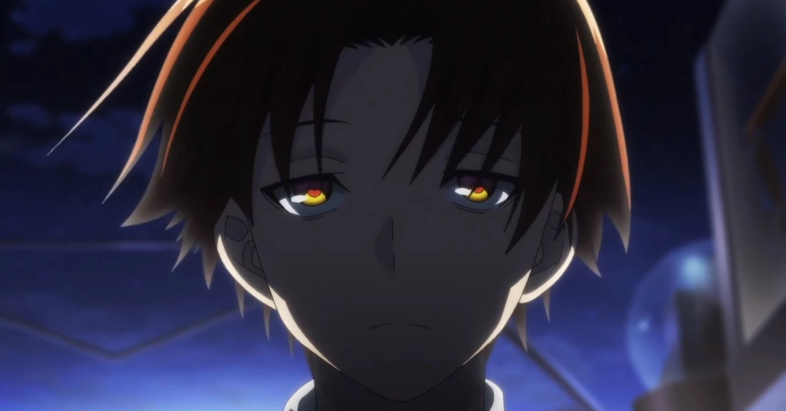

About Me
Isa akong Mysterious boy na palaging naka-upo sa gedli ng classroom tapos aabsent for no f*cking reason then babalik na na maraming pasa at sugat sa katawan. Kapag tinanong nila ako kung napaano, ang isasagot ko lang ay "wala toh gagsti (sabay ngiti)" then walk out, pero pipigilan ako ng kaklase ko sabay sabing "magkwento ka tol, hindi ka namin huhusgahan" (sabay suntukin ko sila sa mukha)
Anime version ko
Characteristics
- Faner's (a.k.a Ayanokiji) Characteristics
- Sya ay Mysterious ferson
- Sya ay medyo matalino
- Sya ay nanununtok bigla (jk lang)
- Guitarists and HTMLer
Faner's (a.k.a Ayanokiji) Friend/Relatives
Faner (a.k.a Ayanokiji) ay mayroong mga kaibigan na mula pa sa iba't ibang dimensyon na kaniyang nakakasalamuha sa kanyang paglalakbay. At bestfriend nya si Zoro na meron ding mga kaibigan sa iba't ibang planeta kasi laging syang nawawala
- Roronoa Zoro (Bestfriend)
- Shikamaru Nara (Sensei)
- Master Roshi (Uncle)
- Vinsmoke Sanji (Guro sa Pangchichicks)
- The Map (Universal map use for exploring dimensions
- Doraemon (School Supplies)